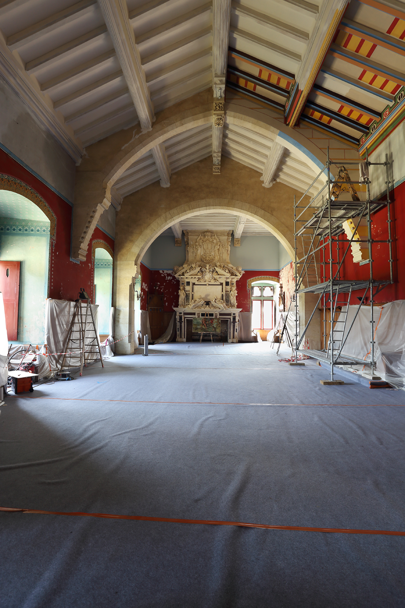

Actualités & Travaux de Restauration
Grâce aux visites, des travaux peuvent être entrepris. L'ensemble des travaux est estimé à 3 millions d'euros : réfection d'une partie des fenêtres à vitraux, réfection des toitures du vieux château et du château neuf en cours, plantation d'arbres...
Un chantier titanesque
La salle synodale, inachevée par Viollet-le-Duc, est en cours de travaux de peinture depuis 2015 avec création des plafonds peints dans le goût de Viollet-le-Duc.
Vous pouvez soutenir la sauvegarde du château en passant par la Fondation de France.
Les Journées du Patrimoine à Roquetaillade
Le Château Fort de Roquetaillade ouvre ses portes et son domaine lors des Journées Européennes du Patrimoine. L'accès au château se fait en visites guidées uniquement.
- • Les guides vous attendent samedi et dimanche de 14h à 18h avec des visites en continu et un tarif spécial.
- • La visite est gratuite pour les enfants de moins de six ans.
- • Le parc est en accès libre et gratuit.
La Métairie de Roquetaillade
Ce musée vivant reconstitue la vie d'une famille de métayers à Roquetaillade où l'on peut aussi découvrir les animaux d'une ferme gasconne (cochons gascons, vaches bazadaises...).
Uniquement pour les groupes sur rendez-vous à partir de Pâques (actuellement fermée pour les visites individuelles).

L'OSTREA
Guinguette à la Métairie de RoquetailladeGuinguette conviviale située sur le domaine de la métairie.